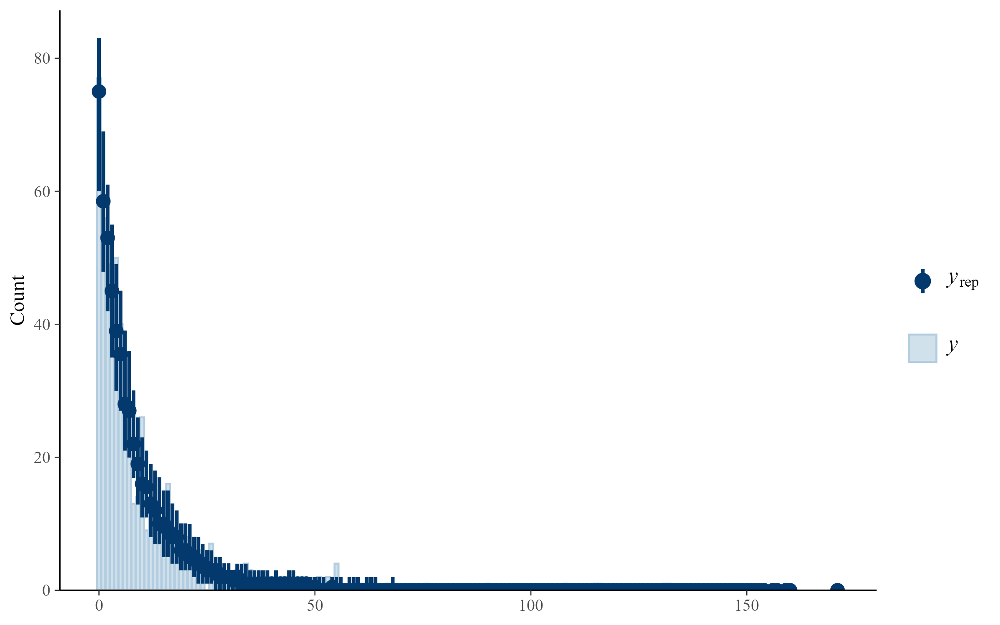

Show code
library(brms)
library(loo)
library(knitr)
library(tidyverse)
dat_model_phylo <- readRDS("data/processed/dat_model_phylo.rds")
phylo_mat <- readRDS("data/processed/phylo_mat.rds")This page evaluates the random-effect structure used in the Bayesian phylogenetic models.
The primary goal is to determine whether study identity should be retained in addition to population identity. Because multiple observations may originate from the same population and some populations may be represented in multiple studies, these grouping factors can partially overlap.
To assess the importance of study identity, we first quantify the overlap between populations and studies and then compare two alternative random-effect structures:
Both models additionally account for species-level variation and phylogenetic relatedness among species.
library(brms)
library(loo)
library(knitr)
library(tidyverse)
dat_model_phylo <- readRDS("data/processed/dat_model_phylo.rds")
phylo_mat <- readRDS("data/processed/phylo_mat.rds")dat_basic_phylo <- dat_model_phylo
dat_basic_phylo$nest_box <- as.factor(dat_basic_phylo$nest_box)
dat_basic_phylo$marker_type <- as.factor(dat_basic_phylo$marker_type)
dat_basic_phylo$id <- as.factor(dat_basic_phylo$id)
dat_basic_phylo$population_id <- as.factor(dat_basic_phylo$population_id)
dat_basic_phylo$species_nonphylo <- as.factor(dat_basic_phylo$species_nonphylo)
dat_basic_phylo$species_phylo <- as.factor(dat_basic_phylo$species_phylo)
dat_basic_phylo <- dat_basic_phylo[
!is.na(dat_basic_phylo$n_epp_broods) &
!is.na(dat_basic_phylo$n_broods_sampled) &
dat_basic_phylo$n_broods_sampled > 0 &
dat_basic_phylo$n_epp_broods <= dat_basic_phylo$n_broods_sampled &
!is.na(dat_basic_phylo$id) &
!is.na(dat_basic_phylo$population_id) &
!is.na(dat_basic_phylo$species_nonphylo) &
!is.na(dat_basic_phylo$species_phylo),
]
dat_basic_phylo <- droplevels(dat_basic_phylo)species_in_phylo <- all(
dat_basic_phylo$species_phylo %in% rownames(phylo_mat)
)
data_checks <- data.frame(
quantity = c(
"Records",
"Species",
"Populations",
"Studies",
"Species present in phylogenetic matrix"
),
value = c(
nrow(dat_basic_phylo),
length(unique(dat_basic_phylo$species_phylo)),
length(unique(dat_basic_phylo$population_id)),
length(unique(dat_basic_phylo$id)),
species_in_phylo
)
)
kable(data_checks)| quantity | value |
|---|---|
| Records | 589 |
| Species | 153 |
| Populations | 233 |
| Studies | 221 |
| Species present in phylogenetic matrix | 1 |
To evaluate whether population identity already captures most of the repeated-measures structure in the dataset, we quantified how many studies contributed data to each population.
study_population_overlap <- aggregate(
id ~ population_id,
data = dat_basic_phylo,
FUN = function(x) length(unique(x))
)
names(study_population_overlap) <- c(
"population_id",
"n_studies"
)
overlap_table <- as.data.frame(
table(study_population_overlap$n_studies)
)
names(overlap_table) <- c(
"n_studies",
"n_populations"
)
overlap_table$percent_populations <- round(
100 * overlap_table$n_populations /
sum(overlap_table$n_populations),
1
)
kable(overlap_table)| n_studies | n_populations | percent_populations |
|---|---|---|
| 1 | 225 | 96.6 |
| 2 | 7 | 3.0 |
| 3 | 1 | 0.4 |
This table indicates how frequently populations are represented by multiple studies. Strong overlap between population identity and study identity would suggest that population identity may already account for much of the non-independence among observations.
The same prior specification was used for both candidate models.
priors_basic <- c(
prior(normal(0, 2), class = "Intercept"),
prior(exponential(1), class = "sd")
)This model accounts for repeated observations of the same population, species-level variation, and phylogenetic relatedness.
m_basic_pop <- brm(
n_epp_broods | trials(n_broods_sampled) ~
1 +
(1 | population_id) +
(1 | species_nonphylo) +
(1 | gr(species_phylo, cov = phylo_mat)),
data = dat_basic_phylo,
data2 = list(phylo_mat = phylo_mat),
family = beta_binomial(link = "logit", link_phi = "log"),
prior = priors_basic,
chains = 4,
cores = 4,
iter = 10000,
warmup = 5000,
control = list(
adapt_delta = 0.99,
max_treedepth = 15
),
seed = 123
)m_basic_pop <- readRDS(
"models/m_basic_pop.rds"
)
summary(m_basic_pop) Family: beta_binomial
Links: mu = logit
Formula: n_epp_broods | trials(n_broods_sampled) ~ 1 + (1 | population_id) + (1 | species_nonphylo) + (1 | gr(species_phylo, cov = phylo_mat))
Data: dat_basic_phylo (Number of observations: 589)
Draws: 4 chains, each with iter = 10000; warmup = 5000; thin = 1;
total post-warmup draws = 20000
Multilevel Hyperparameters:
~population_id (Number of levels: 233)
Estimate Est.Error l-95% CI u-95% CI Rhat Bulk_ESS Tail_ESS
sd(Intercept) 0.64 0.07 0.51 0.79 1.00 4434 8188
~species_nonphylo (Number of levels: 156)
Estimate Est.Error l-95% CI u-95% CI Rhat Bulk_ESS Tail_ESS
sd(Intercept) 0.56 0.24 0.05 0.96 1.00 1000 2017
~species_phylo (Number of levels: 153)
Estimate Est.Error l-95% CI u-95% CI Rhat Bulk_ESS Tail_ESS
sd(Intercept) 1.43 0.35 0.81 2.13 1.00 1270 3576
Regression Coefficients:
Estimate Est.Error l-95% CI u-95% CI Rhat Bulk_ESS Tail_ESS
Intercept -1.93 0.63 -3.17 -0.63 1.00 10367 11504
Further Distributional Parameters:
Estimate Est.Error l-95% CI u-95% CI Rhat Bulk_ESS Tail_ESS
phi 108.83 40.65 56.96 210.75 1.00 11146 14500
Draws were sampled using sampling(NUTS). For each parameter, Bulk_ESS
and Tail_ESS are effective sample size measures, and Rhat is the potential
scale reduction factor on split chains (at convergence, Rhat = 1).This model additionally accounts for non-independence among observations originating from the same study.
m_basic_pop_study <- brm(
n_epp_broods | trials(n_broods_sampled) ~
1 +
(1 | id) +
(1 | population_id) +
(1 | species_nonphylo) +
(1 | gr(species_phylo, cov = phylo_mat)),
data = dat_basic_phylo,
data2 = list(phylo_mat = phylo_mat),
family = beta_binomial(link = "logit", link_phi = "log"),
prior = priors_basic,
chains = 4,
cores = 4,
iter = 10000,
warmup = 5000,
control = list(
adapt_delta = 0.99,
max_treedepth = 15
),
seed = 124
)m_basic_pop_study <- readRDS(
"models/m_basic_pop_study.rds"
)
summary(m_basic_pop_study) Family: beta_binomial
Links: mu = logit
Formula: n_epp_broods | trials(n_broods_sampled) ~ 1 + (1 | id) + (1 | population_id) + (1 | species_nonphylo) + (1 | gr(species_phylo, cov = phylo_mat))
Data: dat_basic_phylo (Number of observations: 589)
Draws: 4 chains, each with iter = 10000; warmup = 5000; thin = 1;
total post-warmup draws = 20000
Multilevel Hyperparameters:
~id (Number of levels: 221)
Estimate Est.Error l-95% CI u-95% CI Rhat Bulk_ESS Tail_ESS
sd(Intercept) 0.45 0.17 0.05 0.73 1.00 741 1100
~population_id (Number of levels: 233)
Estimate Est.Error l-95% CI u-95% CI Rhat Bulk_ESS Tail_ESS
sd(Intercept) 0.42 0.16 0.07 0.70 1.00 699 1771
~species_nonphylo (Number of levels: 156)
Estimate Est.Error l-95% CI u-95% CI Rhat Bulk_ESS Tail_ESS
sd(Intercept) 0.53 0.23 0.05 0.93 1.00 810 2060
~species_phylo (Number of levels: 153)
Estimate Est.Error l-95% CI u-95% CI Rhat Bulk_ESS Tail_ESS
sd(Intercept) 1.40 0.34 0.80 2.09 1.00 1297 3657
Regression Coefficients:
Estimate Est.Error l-95% CI u-95% CI Rhat Bulk_ESS Tail_ESS
Intercept -1.93 0.61 -3.10 -0.69 1.00 8308 9362
Further Distributional Parameters:
Estimate Est.Error l-95% CI u-95% CI Rhat Bulk_ESS Tail_ESS
phi 111.02 42.63 57.53 218.75 1.00 8351 12839
Draws were sampled using sampling(NUTS). For each parameter, Bulk_ESS
and Tail_ESS are effective sample size measures, and Rhat is the potential
scale reduction factor on split chains (at convergence, Rhat = 1).Predictive performance was compared using leave-one-out cross-validation (LOO). The LOO comparison was computed in the external model-running script and saved as models/loo_comparison_basic.rds.
loo_comparison_basic <- readRDS(
"models/loo_comparison_basic.rds"
)
loo_basic_df <- as.data.frame(
loo_comparison_basic
)
loo_basic_df$model <- rownames(
loo_basic_df
)
loo_basic_df <- loo_basic_df[
,
c("model", "elpd_diff", "se_diff")
]
knitr::kable(
loo_basic_df,
digits = 2
)| model | elpd_diff | se_diff | |
|---|---|---|---|
| m_basic_pop | m_basic_pop | 0.00 | 0.00 |
| m_basic_pop_study | m_basic_pop_study | -0.27 | 2.53 |
m_basic_pop <- readRDS(
"models/m_basic_pop.rds"
)
np_basic <- nuts_params(
m_basic_pop
)
n_divergent <- sum(
np_basic$Parameter == "divergent__" &
np_basic$Value == 1
)
knitr::kable(
data.frame(
diagnostic = "Divergent transitions",
value = n_divergent
)
)| diagnostic | value |
|---|---|
| Divergent transitions | 0 |
knitr::include_graphics("figures/pp_check_overall_basic_pop.png")
The comparison evaluates whether study identity contributes meaningful information beyond population identity. If the model including study identity shows little improvement in predictive performance and the overlap analysis indicates that most populations are represented by a single study, population identity alone provides an adequate representation of repeated-measures structure. The selected random-effect structure is retained in all subsequent environmental models.